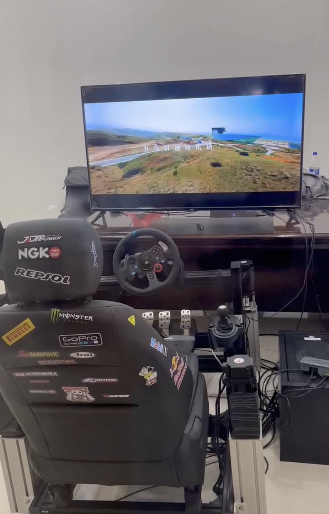
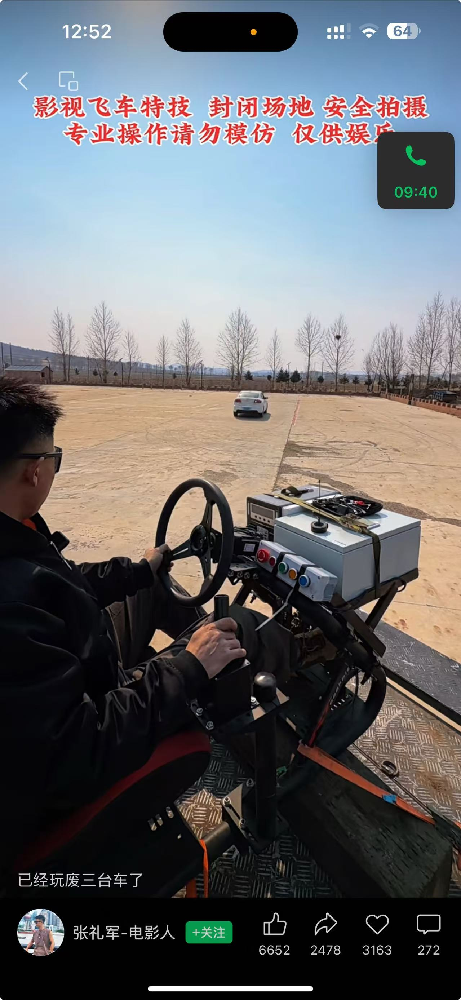

TelePilot 是全球领先的全链路实车远控系统。通过“沉浸式驾舱”与“车载快装套件”，让操作者在千里之外亦能实时感知真车的物理反馈。

端到端的闭环控制架构

在不危及特技演员生命的情况下，远程完成高难度的撞车与爆炸镜头。
操作员在空调房内控制数公里外的重型矿卡，彻底告别粉尘与危险。
结合物理反馈触觉，让远程排雷更精准、更安全。
留下您的联系方式，我们的技术团队将在 24 小时内为您提供定制方案。